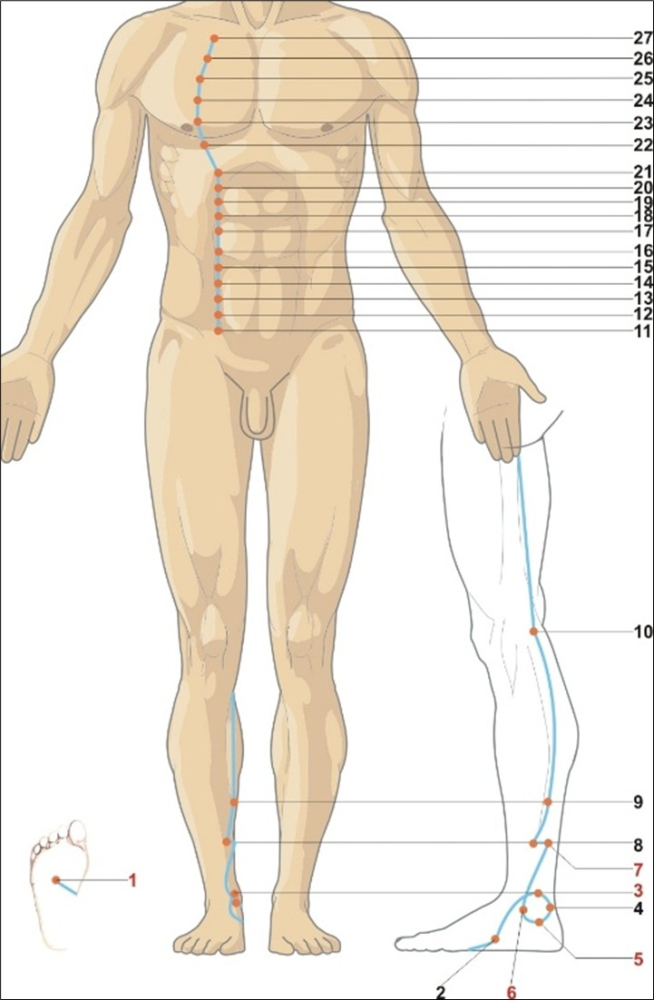

Fereastra vitalității și a închiderii zilei
Rinichiul atinge potențialul maxim între 17:00 – 19:00, momentul în care energia se retrage dinspre periferie spre adâncime, pregătindu-se pentru noapte. Este fereastra optimă pentru activități care necesită rezistență, voință și stabilitate. Oboseala accentuată la această oră sau senzația de frig indică un deficit de Qi/Yang renal.
Energie, ore & elemente asociate
☯Tip energetic
- Yin profund — Zu Shaoyin (足少阴): Micul Yin al piciorului. Rinichiul este rădăcina tuturor energiilor Yin și Yang ale corpului, stocând esența prenatală (Jing) și Qi-ul original (Yuan Qi).
- Meridian pereche: Vezica Urinară (Zu Taiyang 足太阳). Cuplul Apă: Rinichiul stochează și transformă, vezica elimină. Împreună reglează metabolismul apei și homeostazia.
- Spirit: Zhi (志) — voința, determinarea, capacitatea de a persevera și de a-ți forma destinul. Un Zhi puternic dă curaj, motivație și rezistență psihică.
- Organ de simț asociat: Urechea (auzul, echilibrul, înțelepciunea auditivă). Tinitusul sau hipoacuzia sunt semne de dezechilibru renal.
💧Element Apă (水) — Depozitarea și iarnă
- Direcție: Nord | Anotimp: Iarna
- Climat: Frigul | Culoare: Negru / Albastru-închis
- Gust: Sărat | Sunet: Geamătul
- Emoție: Frica (în dezechilibru); înțelepciunea, calmul (în echilibru)
- Țesuturi: Oasele, măduva (inclusiv creierul), dinții, părul
- Funcții speciale: Rinichii guvernează reproducerea, creșterea și dezvoltarea, filtrul sângelui, echilibrul acido-bazic și hormonal (glande suprarenale).
🕐Ceasul organic — 24 h
- Înainte — Vezica Urinară (BL): 15:00–17:00. Eliminarea deșeurilor și reglarea fluidelor, pregătind terenul pentru înmagazinarea energiei.
- Rinichiul (KD): 17:00–19:00. Fereastra stocării esenței și a consolidării voinței. Activitățile care solicită rezistență fizică sau intelectuală sunt optime în acest interval.
- După — Pericardul (PC): 19:00–21:00. Tranziția către relaxare și intimitate, după ce energia a fost „pusă la păstrare”.
- Semnificație clinică: Senzația de frig intens între 17-19 = deficit de Yang renal. Oboseală copleșitoare la această oră = deficit de Qi renal. Poliuria nocturnă accentuată în această fereastră = deficiență de Yang al Rinichiului.
GB
LV
LU
LI
胃
脾
HT
SI
BL
KD
心包
TW
Traseu & anatomie energetică

În depresiunea din fața tălpii, la 1/3 distală de la baza degetelor, între metatarsienele 2-3. „Fântâna care țâșnește” — punctul de împământare și ancorare a Yang-ului.
KD-2 sub maleola medială, pe osul navicular. KD-3 în depresiunea dintre maleola medială și tendonul lui Ahile — punctul Yuan-Sursă al Rinichiului, principalul tonic.
KD-4 posterior de KD-3 (Luo-Conector). KD-5 la 1 cun sub maleolă (Xi-Fisură). KD-6 la 1 cun sub maleolă, pe os — cheia Vasului Yin Qiao, pentru insomnie și gât uscat.
KD-7 la 2 cun deasupra KD-3 (reglează transpirația). KD-8 anterior de KD-7. KD-9 la 5 cun deasupra maleolei, întâlnire cu Yin Wei Mai.
În capătul medial al pliului popliteu, între tendoanele semitendinos și semimembranos. Punct He-Mare al Rinichiului.
Meridianul urcă pe abdomen la 0.5 cun lateral de linia mediană, traversând toate punctele de la KD-11 la KD-21, apoi pe torace la 2 cun lateral de stern (KD-22 la KD-27), terminându-se sub claviculă.
🔗Conexiuni interne profunde
- Originea în talpă și conectarea cu coloana: Traseul profund urcă de la KD-1 la baza coloanei vertebrale (GV-1), reflectând legătura dintre energia renală și sănătatea coloanei, măduvei osoase și creierului.
- Legătura cu vezica urinară: O ramură internă coboară la vezica urinară, controlând eliminarea și stocarea urinei — dezechilibrele KD produc poliurie, retenție sau incontinență.
- Conexiunea cu ficatul și plămânii: O ramură părăsește rinichii pentru a intra în ficat (relația Apă-Lemn) și plămâni (relația Metal-Apă), armonizând respirația profundă (plămânii inspiră, rinichii ancorează Qi-ul).
- Ramura către inimă și pericard: Din plămâni, o ramură curge la inimă și piept, conectând Apa cu Focul — baza armoniei inimă-rinichi (apă sus, foc jos).
- Conexiunea cu organele genitale și glandele suprarenale: Rinichii „externi” sunt testiculele/ovarele; cortexul suprarenal produce hormoni esențiali pentru răspunsul la stres (cortizol, adrenalină).
Rol: „Ministerul energiei" — funcții fiziologice
💎Stocarea esenței Jing (精)
Rinichiul este rezervorul Jing-ului prenatal (moștenit de la părinți) și al Jing-ului postnatal (extras din alimente). Jing-ul guvernează creșterea, dezvoltarea, reproducerea și longevitatea. O epuizare a Jing-ului accelerează îmbătrânirea.
💪Voința și curajul (Zhi)
Zhi (志) este aspectul psihic al Rinichiului — voința, determinarea, ambiția, capacitatea de a persevera și de a-ți forma destinul. Un Rinichi puternic dă motivație, rezistență mentală și curaj în fața dificultăților.
🦴Guvernarea oaselor și măduvei
Rinichii hrănesc oasele, măduva osoasă (producția celulelor sanguine) și creierul („măduva măduvei”). Osteoporoza, întârzierea dezvoltării osoase la copii și declinul cognitiv sunt legate de deficit renal.
💧Metabolismul apei
Rinichii, împreună cu vezica urinară, reglează filtrarea, reabsorbția și excreția apei. Qi-ul renal „transformă” și „propulsează” fluidele. Edemele, poliuria, oliguria sau urina tulbure indică dezechilibru.
🌬️Ancorarea Qi-ului ( receptarea respirației)
În timpul inhalării profunde, plămânii inspiră, dar rinichii „ancorează” Qi-ul, împiedicându-l să urce prea sus. Astmul sau respirația superficială care se agravează la efort pot indica un deficit de Qi renal.
🦷Deschiderea în urechi și păr
Tinitusul, hipoacuzia, părul fragil, cărunt prematur sau chelia reflectă starea Rinichiului. Un păr lucios și un auz fin sunt semne de Jing suficient.
Blocaje & indicații terapeutice
⚠️Tipare patologice principale
- Deficiență de Qi al Rinichiului: Oboseală, dificultăți de respirație, poliurie, incontinență urinară de efort, prolaps uterin sau rectal, dureri lombare surde, amețeli.
- Deficiență de Yang al Rinichiului (frig): Ca mai sus, plus senzație de frig la nivelul spatelui și membrelor, membre reci, impotență/frigiditate, infertilitate, edeme matinale, urină clară abundentă, puls profund și lent.
- Deficiență de Yin al Rinichiului (căldură falsă): Transpirații nocturne, senzație de căldură în palme și tălpi, gură uscată noaptea, tinitus, insomnie, vise erotice, emisii seminale involuntare, limbă roșie fără depuneri.
- Deficiență de Jing renal: Îmbătrânire prematură, păr cărunt, chelie, pierderea memoriei, demență, dezvoltare întârziată la copii, infertilitate, oase fragile.
- Exces de Yang al Rinichiului (foc fals sau stază): Rar în practică; poate apărea ca hipertensiune cu senzație de căldură în cap, agitație, urină închisă, constipație, insomnie.
- Manifestări pe traiect: Dureri de talpă, gleznă, gambă medială, genunchi medial, de-a lungul liniei mediane abdominale, dureri toracice laterale.
🏥Indicații terapeutice generale
- Renale și urinare: Nefrită cronică, insuficiență renală, infecții urinare recurente, pietre la rinichi, enurezis, incontinență, poliurie nocturnă.
- Musculo-scheletice: Lombalgie cronică, hernie de disc, osteoporoză, artroză de genunchi, slăbiciune a membrelor inferioare, dureri de călcâi.
- Reproductive și sexuale: Impotență, ejaculare precoce, infertilitate (bărbați și femei), frigiditate, dismenoree, sindrom premenstrual, menopauză.
- Respiratorii: Astm cronic (mai ales cel cu dificultăți la inspirație), bronșită cronică, dispnee.
- Neuro-psihice: Depresie, anxietate, fobii, atacuri de panică, lipsă de voință, memorie slabă, demență, boala Alzheimer, insomnia din deficit de Yin.
- ORL: Tinitus, hipoacuzie, vertij, uscăciunea gâtului.
Zhi — voința, curajul și rădăcina psihicului
Rinichiul este sediul voinței (Zhi 志) — acea forță interioară care spune „da” vieții, care perseverează, care își croiește destinul. Un Rinichi puternic conferă motivație, rezistență la obstacole, curaj de a acționa și capacitatea de a finaliza proiecte. Când Rinichiul este slăbit, voința se topește — apar frica, nesiguranța, lipsa de direcție, procrastinarea și sentimentul că viața este copleșitoare.
Atribute psiho-emoționale ale Rinichiului
✅Atribute pozitive — Rinichi în armonie
- Voință puternică, determinare, perseverență
- Curaj, lipsa fricii patologice, încredere în sine
- Înțelepciune, raționalitate, percepție clară
- Blândețe, auto-înțelegere, răbdare
- Capacitate de a munci intens și de a se recupera
- Stabilitate emoțională, echilibru în fața provocărilor
⚠️Atribute negative — Rinichi dezechilibrat
- Frica cronică, panică, anxietate generalizată
- Nesiguranță, lipsă de încredere, singurătate interioară
- Lipsă de voință, amânare, lipsa motivației
- Paranoia, fobii, senzația de pericol iminent
- Deznădejde, depresie profundă, anhedonie
- Iritabilitate, nerăbdare, maximalism (în exces de Yang)
Manifestări psihice în funcție de tipul energetic
↓Deficit de Qi / Yang / Jing — Voința stinsă · Frica paralizantă
Frică profundă, neliniște sufletească cronică, senzație că totul este o povară fără sens. Amânare, lipsă de motivație, grijă, deznădejde, întristare, fobii, anxietate, paranoia, accese de panică, depresie. Persoana dispune de foarte puțină energie și totul se încetinește. Poate ajunge la o stare de muncă excesiv-compulsivă (dependent de muncă) ca încercare de a compensa lipsa de valoare interioară. În deficit sever de Jing: apatie, demență, pierderea memoriei, regresie comportamentală.
↑Exces de Yang (foc fals) sau Stagnare — Voință hiperactivă · Fanatism
Persoane maniace ale muncii, pe fugă tot timpul, nerăbdătoare, maximaliste, fanatice, împinse de la spate de teama de eșec. Se plâng mult, se vaită, dar nu se opresc. Pot fi antisociale, iritabile, cinice, neinteresate de părerile altora, intolerante, încăpățânate. Problemele în relația de cuplu (gelozie, certuri) slăbesc rinichii. În exces de căldură falsă: agitație, insomnie, sentiment de căldură internă, impulsivitate.
Dinamica arhetipală: Rinichiul & relația cu părinții
👪Relația cu principiul matern (Yin) — siguranța fundamentală
- Armonie: Integrare sănătoasă a influenței materne, sentimentul de siguranță emoțională și apartenență. Capacitatea de a te simți iubit și acceptat necondiționat, de a avea „rădăcini” solide.
- Dezechilibru ușor: Nevoie crescută de validare și afecțiune. Ușoară teamă de abandon. Dificultăți în a te simți pe deplin în siguranță.
- Dezechilibru moderat: Sentimentul că nu ai primit suficientă iubire sau susținere din partea mamei. Nesiguranță cronică, tendința de a reține frica sau de a te simți copleșit de emoțiile materne.
- Dezechilibru sever: Traumă legată de lipsa de îngrijire maternă sau de respingere. Incapacitate cronică de a te simți în siguranță, în lume și în propriul corp. Blocarea capacității de a primi iubire și de a te lăsa hrănit emoțional.
Observație: Rinichiul (Apa) este asociat cu principiul matern fundamental (hrănirea, siguranța, stocarea). Relația cu tatăl este guvernată mai degrabă de Plămân (Metal) sau de Ficat (Lemn).
Instrument de evaluare a meridianului Rinichiului
Glisați pe bara colorată sau utilizați meniul dropdown pentru a selecta starea energetică. Profilul complet — fiziologic, nutrițional, emoțional și terapeutic — se afișează imediat. Corelați cu măsurătorile de biorezonanță și cu istoricul de frici, traume de atașament și nivelul de voință.
Evaluare energetică — Meridian Rinichi (KD)
Selectați nivelul observat: glisați pe bară, trageți indicatorul sau utilizați meniul.
Meridianul Rinichiului (Zu Shaoyin) — 27 puncte KD
Tabel complet cu localizare de precizie, categorie energetică (sistemul Shu-Antice), funcții principale și indicații terapeutice detaliate. Punctele cu ⭐ sunt de uz frecvent în clinică și autoterapie. KD-3 (Taixi) este principalul punct de tonifiere.
| Punct | Localizare | Categorie | Funcții principale | Indicații detaliate |
|---|---|---|---|---|
| KD-1Yongquan 涌泉 · Fântâna care țâșnește | Pe talpă, în depresiunea dintre metatarsienele 2-3, la 1/3 distală de baza degetelor. | Jing-Puț (井) Punct de împământare |
| Lipotimie, insolație, comă, AVC, hipertensiune, migrene, vertij, palpitații, insomnie, anxietate, congestie nazală, dureri de călcâi. ⭐ Punct de urgență și împământare. |
| KD-2Rangu 然谷 · Valea strălucitoare | Pe marginea medială a piciorului, în depresiunea anterioară și inferioară a tuberozității naviculare. | Ying-Izvor (荥) |
| Febră genito-urinară, disurie, hematurie, menoragie, prurit vulvar, leucoree, diabet zaharat, gură uscată, dureri în golul popliteu. |
| KD-3Taixi 太溪 · Pârâul superior ⭐⭐ | În depresiunea dintre maleola medială și tendonul lui Ahile, la nivelul liniei articulației talocrurale. | Shu-Abrupt (输) Yuan-Sursă (原) Punct de tonifiere |
| Lombalgie, slăbiciunea membrelor inferioare, surditate, tinitus, amigdalită cronică, impotență, infertilitate, poliurie nocturnă, astm cronic, oboseală suprarenală, dureri de călcâi. ⭐ Punctul principal pentru întărirea Rinichiului. |
| KD-4Dazhong 大钟 · Marele Clopot | Posterior și inferior de maleola medială, pe marginea medială a tendonului lui Ahile, 0.5 cun posterior de KD-3. | Luo-Conector (络) |
| Retenție urinară sau incontinență, dureri lombosacrale, astm bronșic, constipație, depresie, tulburări de memorie, hemoragii uterine. |
| KD-5Shuiquan 水泉 · Izvorul apei | 1 cun sub maleola medială, în depresiunea de pe fața medială a osului calcanean. | Xi-Fisură (郄) |
| Dismenoree, menoragie, hemoroizi, retenție placentară, colici renale, dureri acute în fosa iliacă, infertilitate, hernie. |
| KD-6Zhaohai 照海 · Marea Strălucitoare ⭐ | 1 cun sub maleola medială, în depresiunea de pe marginea inferioară a maleolei. | Punct cheie Yin Qiao Mai |
| Insomnie, anxietate, dureri de gât cronice, laringită, gură uscată, tulburări menstruale, uscăciune vaginală, palpitații, epilepsie, incontinență urinară. |
| KD-7Fuliu 复溜 · Revenirea curgerii | 2 cun deasupra KD-3, în depresiunea anterioară marginii tendonului lui Ahile. | Jing-Râu (经) |
| Transpirații nocturne, anhidroză, hiperhidroză, constipație sau diaree, dureri lombare, slăbiciune musculară, edeme ale membrelor inferioare. |
| KD-8Jiaoxin 交信 · Întrepătrunderea Spiritului | 2 cun deasupra KD-3, 0.5 cun anterior de KD-7. | Punct de întâlnire |
| Dismenoree, endometrioză, fibrom uterin, infertilitate, palpitații, anxietate generalizată, senzație de nod în gât, hemoroizi. |
| KD-9Zhubin 筑宾 · Malul clătinat | 5 cun deasupra KD-3, pe marginea medială a tibiei, în mușchiul solear. | Întâlnire Yin Wei Mai |
| Grețuri severe, vărsături, reflux gastroesofagian, vertij emetic, accese de panică, crize de furie, tulburare bipolară (faza maniacală), insomnie agitată. |
| KD-10Yingu 阴谷 · Valea Yinului | În capătul medial al pliului popliteu, între tendoanele semitendinos și semimembranos. | He-Mare (合) |
| Cistită acută, uretrită, prostatită, leucoree purulentă, hemoroizi, durere și umflătură a genunchiului. |
| Punctele abdominale și toracice (KD-11 la KD-27) — toate situate la 0.5 cun lateral de linia mediană pe abdomen (KD-11 la KD-21) și la 2 cun lateral de stern pe torace (KD-22 la KD-27). Indicații generale: tulburări genito-urinare, infertilitate, dureri abdominale, hernii, tulburări menstruale, astm, tuse, dureri toracice. | ||||
| KD-11Henggu 横骨 | 5 cun sub buric, 0.5 cun lateral. | Local | Armonizează uterul, elimină congestia pelvină. | Dureri genitale, infertilitate, leucoree, hernie inghinală. |
| KD-12Dahe 大赫 | 4 cun sub buric, 0.5 cun lateral. | Local | Tonifică Jing-ul, întărește ligamentele pelviene. | Infertilitate prin frig, dureri hipogastrice, frigiditate, ejaculare precoce. |
| KD-13Qixue 气穴 | 3 cun sub buric, 0.5 cun lateral. | Local | Armonizează sângele și Qi-ul în uter. | Menoragie, metroragie, infertilitate din stază de sânge, dureri în timpul actului sexual. |
| KD-14Siman 四满 | 2 cun sub buric, 0.5 cun lateral. | Local | Elimină blocajele reci, deschide abdomenul inferior. | Distensie abdominală, constipație spastică, colici menstruale. |
| KD-15Zhongzhu 中注 | 1 cun sub buric, 0.5 cun lateral. | Local | Tonifică splina și rinichiul, oprește diareea cronică. | Diaree cronică, incontinență urinară de efort, prolaps. |
| KD-16Huangshu 肓俞 | La nivelul ombilicului, 0.5 cun lateral. | Local | Reglează intestinul subțire, elimină umezeala. | Constipație/diaree alternantă, meteorism, dureri periombilicale. |
| KD-17Shangqu 商曲 | 2 cun deasupra ombilicului, 0.5 cun lateral. | Local | Elimină blocajele ficat-rinichi, tratează ascita. | Ascită, ciroză hepatică, dureri epigastrice, greață cronică. |
| KD-18Shiguan 石关 | 3 cun deasupra ombilicului, 0.5 cun lateral. | Local | Armonizează stomacul, coboară Qi-ul rebel. | Gastrită cronică, reflux acid, eructații, stomac „nervos”. |
| KD-19Yindu 阴都 | 4 cun deasupra ombilicului, 0.5 cun lateral. | Local | Hrănește Yin-ul plămân-rinichi, calmează tusea de vid. | Tuse cronică uscată, hemoptizie, uscăciune faringiană. |
| KD-20Futonggu 腹通谷 | 5 cun deasupra ombilicului, 0.5 cun lateral. | Local | Tonifică Rinichiul și splina, ridică energia lăsată. | Vomă nervoasă, hipotensiune ortostatică, vertij. |
| KD-21Youmen 幽门 | 6 cun deasupra ombilicului, 0.5 cun lateral. | Punct-Mu al Stomacului | Reglează aciditatea gastrică, elimină refluxul biliar. | Gastrită hiperacidă, ulcer duodenal, arsuri retrosternale. |
| KD-22Bulang 步廊 | Al 5-lea spațiu intercostal, 2 cun lateral de stern. | Local | Deschide pieptul, tonifică Rinichiul în astm. | Astm bronșic cronic, tuse, dispnee, durere toracică laterală. |
| KD-23Shenfeng 神封 | Al 4-lea spațiu intercostal, 2 cun lateral de stern. | Local | Elimină flegma din căile aeriene. | Bronșită cronică productivă, astm umed, wheezing. |
| KD-24Lingxu 灵墟 | Al 3-lea spațiu intercostal, 2 cun lateral de stern. | Local | Calmează mintea, tratează anxietatea renală. | Tulburări de anxietate, insomnie, palpitații emoționale. |
| KD-25Shencang 神藏 | Al 2-lea spațiu intercostal, 2 cun lateral de stern. | Local | Armonizează apa și focul (inimă-rinichi). | Insomnie prin dezechilibru inimă-rinichi, palpitații nocturne, transpirații în somn. |
| KD-26Yuzhong 彧中 | Primul spațiu intercostal, 2 cun lateral de stern. | Local | Curăță căldura flegmatică, deschide căile aeriene. | Tuse acută, bronșită, respirație șuierătoare. |
| KD-27Shufu 俞府 | În depresiunea infraclaviculară, 2 cun lateral de linia mediană. | Punct final | Reglează plămânul și rinichiul în astmul cronic. | Astm bronșic sever cronic, dispnee paroxistică, senzație de sufocare. |
※ Tabelul include toate cele 27 puncte conform canoanelor. Pentru simplitate, punctele KD-11–KD-27 sunt prezentate în format condensat, dar localizarea și indicațiile sunt complete.
Protocoale de autoterapie — Elementul Apă
Tehnicile de mai jos pot fi practicate zilnic fără echipament special. Fereastra optimă pentru practici KD: între 17:00–19:00 (seara, înainte de cină), când energia rinichiului este la apogeu, sau dimineața devreme pentru tonifiere.
Tehnici de acupresură & autoterapie
Masajul tălpii — KD-1 Yongquan ⭐⭐
Masați ferm punctul din fața tălpii (zona „rins”) cu degetul mare sau cu o minge mică. 2-3 minute pe picior, zilnic (seara). Ancorează Yang-ul, reduce hipertensiunea, calmează anxietatea și insomnia, împământează energia.
KD-3 Taixi — tonic renal universal ⭐⭐
Apăsați în depresiunea dintre maleola internă și tendonul lui Ahile. 1-2 minute pe picior, de 2 ori pe zi. Tonifică Qi-ul, Yang-ul și Yin-ul rinichiului. Tratează oboseala cronică, durerile lombare, tinitusul și slăbiciunea membrelor.
KD-6 Zhaohai — insomnie și gât uscat
Punctul situat la 1 cun sub maleola medială. Masaj 1 minut seara. Hrănește Yin-ul renal, calmează insomnia (mai ales cea cu treziri noaptea), ameliorează durerile de gât și uscăciunea faringiană.
Încălzirea lombară (Ming Men)
Frecați palmele una de alta până devin calde, apoi plasați-le pe regiunea lombară (zona GV-4, între ombilicul posterior și vertebrele L2). 1-2 minute, respirație profundă. Tonifică Yang-ul renal, elimină senzația de frig la nivelul spatelui.
Nutriție pentru Apa
Tonifiere Qi/Yang (deficit rece): Alimente calde, sărate moderat (alge marine, pește de mare, creveți, nuci, semințe de susan negru), carne de miel, pui, oua, cereale integrale. Condimente încălzitoare: ghimbir, scorțișoară, piper negru, cuișoare. Hrănire Yin (uscăciune, căldură falsă): Pere, pepene galben, migdale, brânză de capră, oua moi, miere, bulion de oase. Evitați: Alimente reci, crude, excesul de sare, cafea, alcool.
Suplimente & fitoterapie KD
Tonifiere generală: CoQ10 (100-200 mg), Magneziu (300-400 mg), Zinc (15-30 mg), Seleniu (100-200 mcg), Vitamina D3 (2000-4000 UI). Adaptogeni renali: Ashwagandha (tonifiant Yin/Yang), Rehmannia (Shu Di Huang - pentru sânge și Jing), Cordyceps (pentru rinichi-plămâni), Ginseng (pentru Qi). Pentru Yin: Extract de măr de pădure (Schisandra), semințe de susan negru. Pentru Yang: Cistanche, Epimedium (Yin Yang Huo) — numai sub control.
Qi Gong pentru Rinichi — „Săgetătorul"
Stând în picioare, genunchii ușor flexați. Puneți greutatea pe un picior, celălalt atingând ușor solul cu vârfurile degetelor. Mâinile la piept, apoi întindeți un braț în față ca și cum ați trage cu arcul, privind în direcția brațului. 9 repetări pe fiecare parte, seara. Tonifică energia renală, întărește coloana și voința.
Vibrația apei — sunetul „Chuuuu"
Așezat confortabil, inspirați adânc pe nas. La expir, produceți un sunet prelungit „Chuuuu” (ca și cum ați curge apă). Vizualizați o lumină albastră în regiunea lombară. 9 repetări, zilnic. Sunetul specific Rinichiului în Qi Gong terapeutic.
Protocol clinic — combinații de acupunctură
🏥Combinații clinice recomandate
- Deficit de Qi/Yang renal (oboseală, lombalgie, frică): KD-3 (Taixi) tonifiere + KD-7 (Fuliu) + CV-4 (Guanyuan) + BL-23 (Shenshu) + ST-36 (Zusanli) cu moxa.
- Deficit de Yin renal (insomnie, transpirații nocturne, gât uscat): KD-6 (Zhaohai) + KD-3 + SP-6 (Sanyinjiao) + HT-7 (Shenmen) + LU-7 (Lieque).
- Infertilitate / disfuncție sexuală din deficit renal: KD-3 + KD-12 (Dahe) + CV-4 + BL-23 + SP-6.
- Enurezis / incontinență urinară: KD-3 + KD-4 (Dazhong) + CV-3 (Zhongji) + BL-23.
- Tinitus / hipoacuzie: KD-3 + KD-6 + SI-19 (Tinggong) + GB-2 (Tinghui) + SJ-17 (Yifeng).
- Frică, anxietate, lipsă de voință: KD-3 + KD-1 (Yongquan) + PC-6 (Neiguan) + HT-7 + BL-15 (Xinshu).
💬Recomandări psiho-comportamentale — Voința și siguranța
- Ritualul serii (17-19): Opriți activitățile solicitante. O baie caldă a picioarelor (cu sare de mare) timp de 15 minute — relaxează și tonifică Rinichiul. Evitați discuțiile conflictuale și suprasolicitarea mentală.
- Terapie pentru frici și traume de atașament: Terapie somatică (SE), EMDR pentru descărcarea fricii stocate în corp. Lucrul cu partea interioară „siguranța de bază”.
- Practici de voință: Setarea și respectarea unor obiective mici, realizabile zilnic. Jurnalul „Ce am realizat azi” întărește Zhi-ul.
- Împământare: Plimbări desculț pe pământ, iarbă sau nisip (când vremea permite). Vizualizarea rădăcinilor care coboară din talpă în pământ.
- Muzică pentru apă: Sunete de apă curgătoare, tobe joase, frecvențe 396 Hz (eliberarea fricii), muzică ambientală liniștitoare.
Indicații de urgență
Insuficiență renală acută (anurie, edeme acute), criză hipertensivă cu simptome neurologice, comă — necesită evaluare medicală de urgență. Acupunctura este complementară. Punctele KD-1 (Yongquan) și KD-3 (Taixi) pot fi stimulate în hipertensiunea acută ca adjuvant, dar nu înlocuiesc tratamentul alopat.